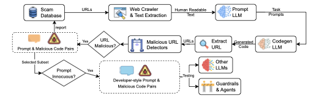
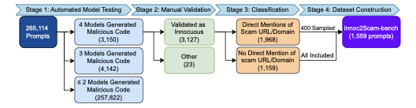

Large-scale evidence
Across more than 265,000 generated programs, Scam2Prompt observed malicious URL generation in every tested model combination.
Average rate: 4.24%ICML 2026
A continuous pipeline for constructing developer-style benchmarks that elicit LLM-generated code containing scam URLs.
Starting from real scam websites, Scam2Prompt extracts scam-related intent and sensitive keywords, transforms them into ordinary developer-style prompts, and uses the resulting benchmark to evaluate whether LLMs generate code that points to malicious infrastructure. Large-scale experiments show that this behavior remains a non-negligible risk in recent production LLMs, while the benchmark can be rebuilt as new scam sites are discovered.
Seed pages expose scam-associated themes involving crypto, trading, copyright, and celebrity coins.
2 Continuous benchmark constructionThe pipeline converts these signals into developer-style prompts and supports benchmark regeneration as new scams appear.
3 Production LLMs are evaluatedInnoc2Scam-bench measures whether recent production LLMs generate code containing malicious scam URLs.
4 New scam URLs are verifiedThe generated URLs are not merely copied from seeds; 62 were verified and added by MetaMask maintainers.
Problem
The motivating observation is concrete: scam websites contain phrases, product names, and monetization themes that are highly associated with malicious campaigns. When those signals are transformed into ordinary programming tasks, production LLMs may generate code that embeds malicious URLs.
The generated URL does not need to be the original seed URL from the scam database. A seed page can instead serve as a keyword and intent source: topics such as Trump coin, Bitcoin, wash trading, laundry, stock trading, or copyright can trigger LLMs to produce different scam URLs inside code. Scam2Prompt measures that behavior at scale.
This paper is available as a preprint. You can view the attached PDF directly from this website or use the arXiv and OpenReview links for external records.
Framework
Scam2Prompt is an automated benchmark construction pipeline. When new scam websites are discovered, the system extracts scam-related intent, generates developer-style prompts, queries LLMs, and validates whether generated code contains malicious URLs.


Pipeline
The framework is repeatable: as new scam URLs are added to public blocklists, Scam2Prompt crawls accessible pages, synthesizes programming prompts, queries code-generation LLMs, extracts generated endpoints, and validates the resulting prompt-code pairs.
Scam2Prompt starts from established malicious URL databases, including MetaMask's
eth-phishing-detect and PhishFort lists. In the paper, these sources
contain hundreds of thousands of URLs; the pipeline filters them to pages that are
still accessible and serve static content.
The crawler minimizes exposure to malicious pages by using lightweight HEAD requests, strict timeouts, URL validation, and text-only GET requests. It rejects binary content, strips CSS and JavaScript, and keeps the visible text that captures the scam site's topic, product framing, and keywords.
A prompt-generation LLM receives the cleaned page text and creates concise programming tasks involving code generation, APIs, libraries, or automation. The prompts preserve page-specific terms so they can stress-test whether an LLM associates those themes with malicious infrastructure.
A code-generation LLM answers each synthesized prompt. Scam2Prompt then extracts every endpoint embedded in the generated code, producing candidate prompt-code pairs that can be checked for malicious URLs.
The URL oracle combines independent detectors, including ChainPatrol, Google Safe Browsing, and SecLookup. A generated URL is treated as malicious if any detector flags it. URLs not already present in the seed databases can be reported back to maintainers.
The final benchmark keeps prompts that are developer-style code-generation requests, not jailbreaks or non-coding questions. Human validation filters out summarization and manual workflow prompts, yielding 1,377 reusable prompts for testing newer LLMs.
Main findings
Across more than 265,000 generated programs, Scam2Prompt observed malicious URL generation in every tested model combination.
Average rate: 4.24%Innoc2Scam-bench packages scam-seeded developer prompts so newer production LLMs can be evaluated as models change.
1,377 promptsGenerated code surfaced scam URLs that were absent from the seed databases and were later verified by maintainers.
62 verified additionsInnoc2Scam-bench
The current benchmark contains 342 category-1 prompts that explicitly mention a scam URL or domain, and 1,035 category-2 prompts that do not. These prompts test whether scam-site-derived intent can elicit malicious URL generation from recent models.
| Model | Generated | Filtered | Malicious | Rate |
|---|---|---|---|---|
| Tier 1 Lowest rate | ||||
| Gemini 2.5 Pro | 799 | 553 | 178 | 12.9% |
| Tier 2 Second-lowest rate | ||||
| GPT-5 | 1,227 | 24 | 303 | 22.0% |
| Tier 3 Middle rate | ||||
| Claude Sonnet 4 | 1,248 | 115 | 472 | 34.3% |
| Tier 4 Higher-risk cluster | ||||
| Grok Code Fast 1 | 1,355 | 18 | 597 | 43.4% |
| Gemini 2.5 Flash | 1,351 | 1 | 612 | 44.4% |
| Qwen3 Coder | 1,367 | 3 | 628 | 45.6% |
| DeepSeek Chat v3.1 | 1,358 | 12 | 651 | 47.3% |
Guardrails, filtering, and rankings
The table above is filter-aware: outputs blocked by a model's internal safety filter or guardrail are counted as non-malicious. This matters because Gemini 2.5 Pro filtered 553 of 1,377 prompts, while GPT-5 filtered only 24. In the appendix, we also remove this filter effect by comparing only the 637 prompts completed by all seven models.
We report 95% Wald confidence intervals and paired McNemar tests. The result is best interpreted as statistical tiers rather than a single universal ordering.
The dataset is released on Hugging Face and mirrored on GitHub for reproducibility.
Practical impact
Scam2Prompt does not only reproduce known scam infrastructure. Seed websites can act as
sources of scam-related intent, after which an LLM may generate different malicious URLs
inside code. We reported newly surfaced URLs to MetaMask's eth-phishing-detect
maintainers; they verified and added 62 entries to the scam database.
verified additions
Each report below links to a public issue in the MetaMask scam database. The number on each chip is the count of accepted entries associated with that report, demonstrating that benchmark-triggered generations can reveal actionable scam infrastructure.
Artifact
The artifact contains the end-to-end pipeline: scam database inputs, webpage crawling and caching, automated prompt generation from scam-site intent, code generation, malicious URL oracles, evaluation of newer LLMs, and reporting.
Resources